Save Editor
The save editor panel is dedicated to saving materials in the User Library, the user Library is a Library of Extreme PBR which will initially be empty, but you can populate it with the materials created with Extreme PBR, so that you can reuse them in the future directly from the Extreme PBR interface.
This process will also save the material preview, so you can see it in the library.
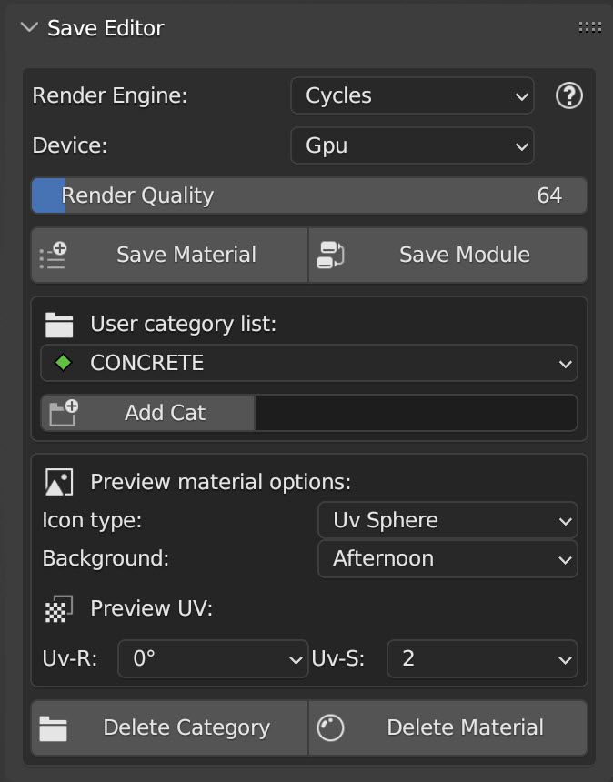{kind=link}
Note
In order to correctly display the panel, you must be positioned on the User Library, otherwise not all tools will be visible.
Render Engine
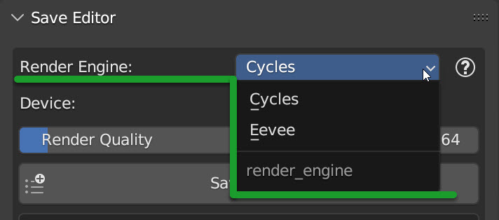{kind=link}
In this menu you can choose which Engine must render the material to transform it into a preview icon you can choose between Cycle and Eevee. Cycles will have a better result in 99% of cases, but it is much slower than Eevee.
Device
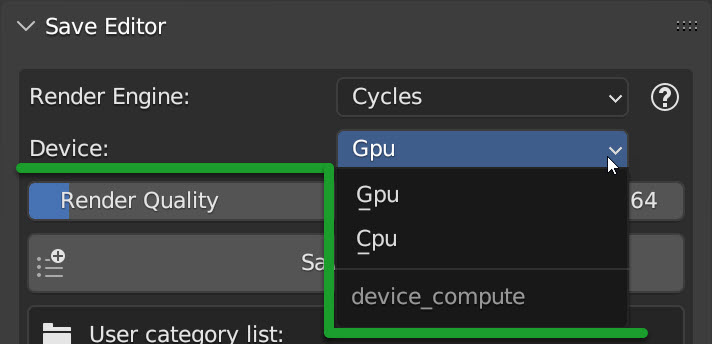{kind=link}
In this menu you can choose which device must render the material to transform it into a preview icon you can choose between CPU and GPU. GPU è molto piu veloce di CPU, ma ci sono alcuni casi che con certi computer con poca memoria ram della scheda video potrebbero avere problemi, quindi potrai scegliere CPU.
Note
This option if set to GPU, at the time of saving the material, if the computer encounters an error during rendering will try again in CPU mode silently
Render Quality
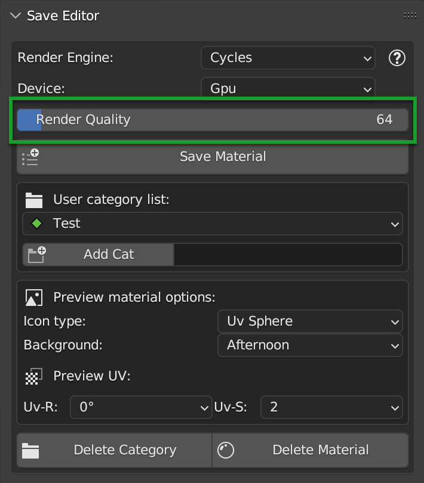{kind=link}
From this menu slider you can choose the rendering quality, the higher the rendering quality, the more precise and quality the rendering will be, but also slower. The default value is 64.
Save Material
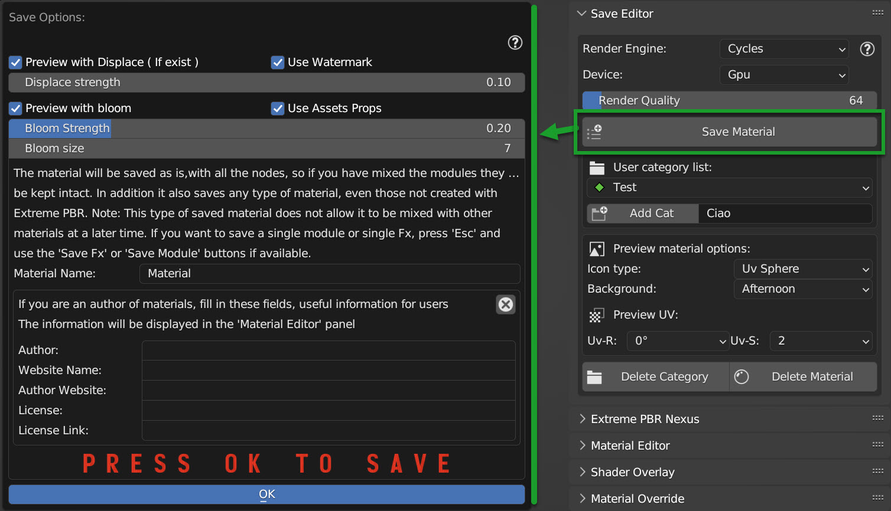{kind=link}
By pressing the Save Material button a dialog box will open where you can choose:
Preview with Displace
If active and if the material has a displace in the nodes, it will be applied to the material before rendering the preview
Use Watermark
Case where you are saving a material: Icon “Material”
Case where you are saving a group (Module): Icon “Node Group”
Displace Strength
Here you decide the strength of the displace to be applied to the material before rendering the preview
Preview with Bloom
If active, a Bloom effect will be applied to the final render, useful for materials that have emissive parts
Use asset props
If the material is present in the asset browser, save the author the tags and description
Bloom Strength
If the Bloom is active, here you can decide the strength of the Bloom, the higher the value, the more intense the Bloom will be.
Bloom Size
If the Bloom is active, here you can decide the size of the Bloom, the higher the value, the more large the Bloom will be.
Material Name
Here you can enter the name of the material on the fly, by default it will be the name of the material of the project.
Save Module
Note
Save Module Nexus, this button appears only if the material has been created in Nexus mode: Material Type
{kind=link}
All the settings of the Popup panel are practically identical to those of the Save Material button described here Save Material
User Category List
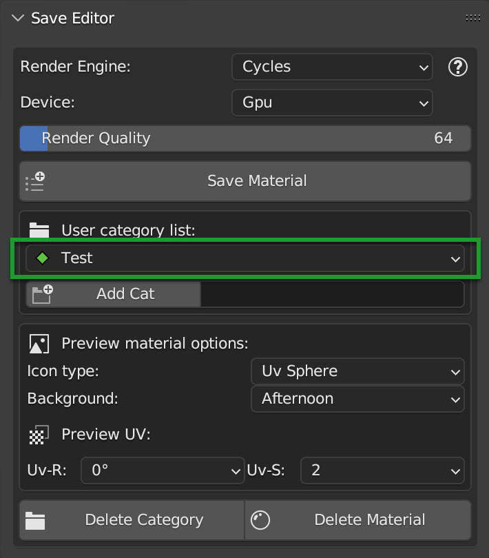{kind=link}
Here you can choose in which category to save the material. If there is not even 1, you will have to create a new one following the instructions just below.
Add Cat
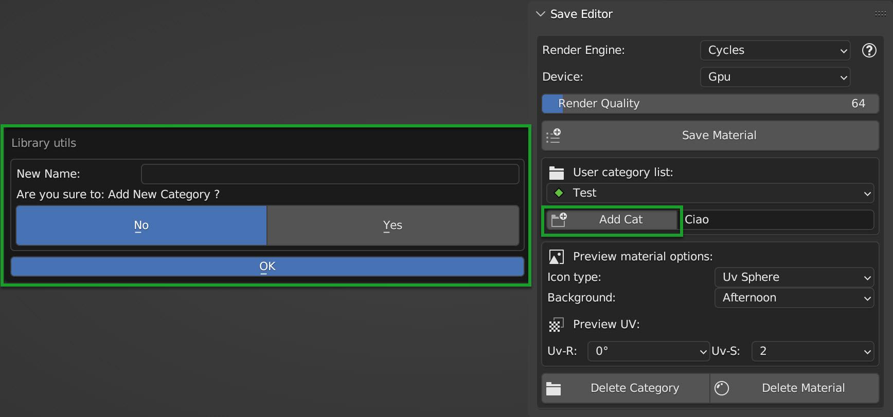{kind=link}
By this button, you can create new categories, for example Wood, Metal, Plastic etc etc. this allows you to have an organized and orderly library.
Make sure to enter a name in the text box next to it.
Note
Attention to the names of the categories, uppercase / lowercase, My Cat is the equivalent of my cat or MY CAT So it will not be possible to create 2 categories with the same name but with different uppercase and lowercase letters.
Icon Type
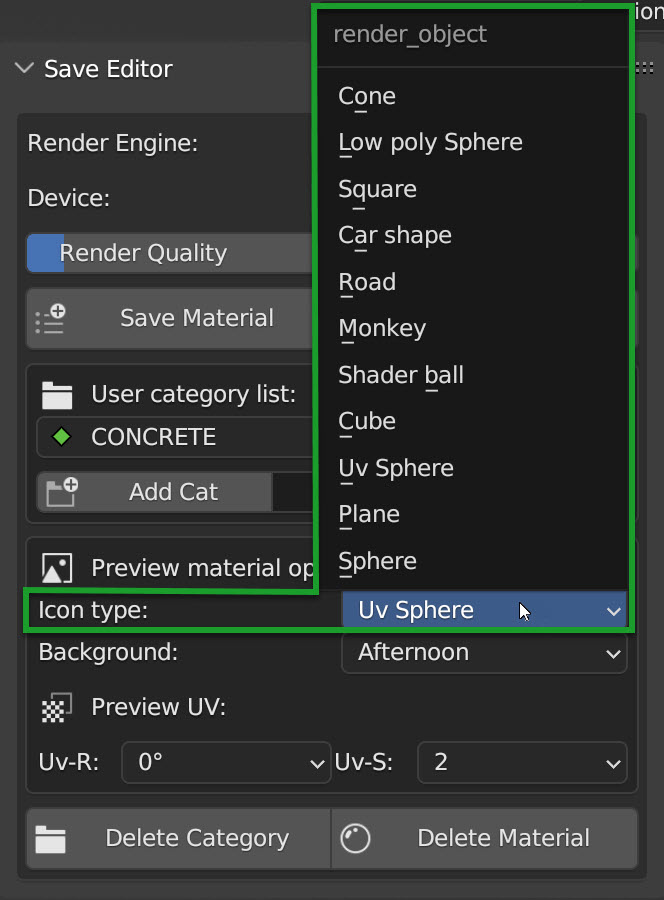{kind=link}
From this menu you can choose the type of geometry on which the material will be applied to render the icon, you can choose between:
Sphere: A sphere
Plane: A Vertical plane
Uv Sphere: A UV sphere
Cube: A cube
Shader Ball: A sphere with a shader ball model
Monkey: A sphere with a Blender monkey model (Suzanne)
Road: A road with curves
Car Shape: A model with a car body shape
Square: A square
Low Poly Sphere: A Low Poly sphere
Cone: A cone
Background
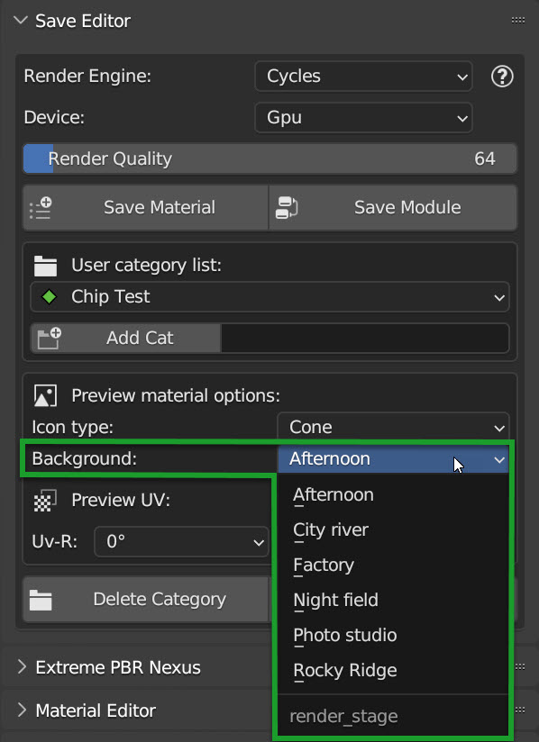{kind=link}
From this menu you can choose the environment to use lighting, it will be an HDR that will act as a light for the material to be rendered
UV Rotation
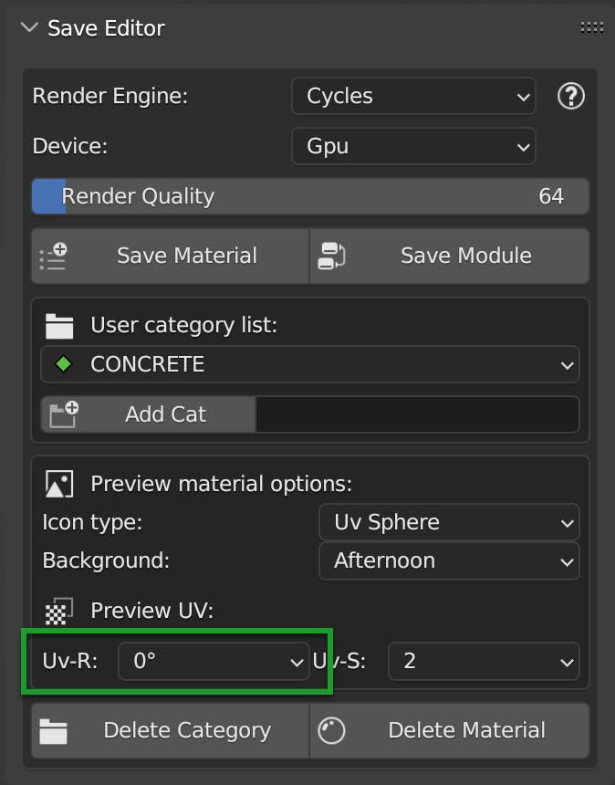{kind=link}
From this menu you can change the rotation of the UV mapping to be applied to the object, so this allows you to rotate the image applied to the object to be rendered.
UV Scale
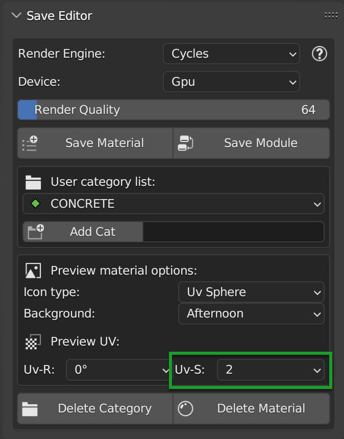{kind=link}
From this menu you can change the scale of the UV mapping to be applied to the object, so this allows you to scale the image applied to the object to be rendered.
Delete Category
Danger
Attention, all the materials contained in this category will be deleted with it. The action is not reversible
{kind=link}
Delete the category User Category List selected. and all the materials contained in it.
Delete Material
Danger
Attention, the action is not reversible
{kind=link}
Delete definitively the active material in the material_browser, the action is not reversible.
{kind=link}